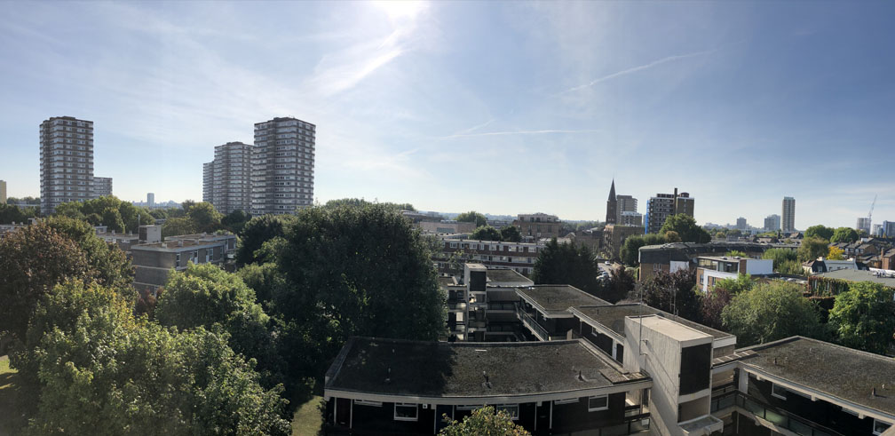

About me
Living in South West London and working in Central London as an IT Engineer

Generally been a good Jack of all trades (get it!) within the industry for about 5 years but I am now trying to specialise in end user tech. From Office 365, desktop management, mobile phones and anything else I get thrown at during my working day.
Alongside tech I ride motorbikes, bicycles and do a decent amount of travelling. This blog is intended to help me learn about the technology I use on a daily basis and the solutions I put in place to make my job easier but along side that I suppose it may become a kind of lifestyle blog for anyone interested enough to read it!